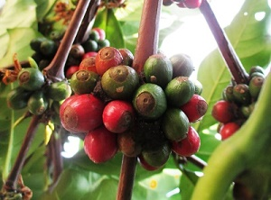

Kopi Excelsa
Kopi excelsa ditemukan pada awal abad ke-20 di wilayah Afrika Barat. Pada awalnya tanaman ini disebut sebagai spesies Coffea Excelsa, kadang-kadang disebut spesies Coffea Dewevrei. Belakangan dikoreksi menjadi Coffea Liberica var. Dewevrei, sebagai salah satu varietas kopi liberika. Namun nama-nama tersebut masih menjadi perdebatan para ahli. Kopi excelsa memiliki banyak nama sinonim, nama latin kopi excelsa. Auguste Chevalier, menyebut kopi ini sebagai spesies Coffea Excelsa. Sementara itu peneliti lainnya, yakni Émile De Wildeman dan Théophile Durand menyebutnya sebagai spesies Coffea Dewevrei. Jean Paul Antoine Lebrun, menggolongkan kopi excelsa sebagai salah stau varietas dari kopi liberika dengan nama ilmiah Coffea Liberica var. Dewerei. Selain itu, ada juga yang menamakannya Coffea Liberica var. Excelsa. Meskipun memiliki banyak nama sinonim, dalam dunia perdagangan komoditas ini dikenal sebagai excelsa.
Saat ini kopi excelsa tidak banyak dibudidayakan. Lebih dari 90% perdagangan kopi dunia dikuasai oleh jenis kopi arabika dan robusta, sebagian kecil sisanya liberika dan excelsa. Di Indonesia kopi excelsa bisa ditemukan di Jambi, ditanam di dataran rendah bertanah gambut. Tanaman ini cocok dikembangkan pada ketinggian lahan mulai 0-750 meter di atas permukaan laut. Idealnya di daerah beriklim tropis dengan curah hujan sedang. Pada tingkat curah hujan tinggi tanaman ini akan lebih mengembangkan kayunya dibanding buahnya. Kopi excelsa memerlukan waktu satu hingga dua bulan dengan curah hujan kurang dari 50 mm untuk berbunga. Tanaman ini diketahui tahan terhadap penyakit karat daun, Hemileia Vastratrix (HV). Produktivitas kopi excelsa mencapai 1,2 ton per hektar. Di Indonesia kopi excelsa dibudidayakan secara terbatas di daerah Tajung Jabung Barat, Jambi. Tanaman ini bisa tumbuh di tanah gambut yang memiliki tingkat keasaman tinggi. Kopi excelsa termasuk tanaman kopi yang bisa cepat menghasilkan, dalam kurun 3,5 tahun buahnya sudah bisa dipanen